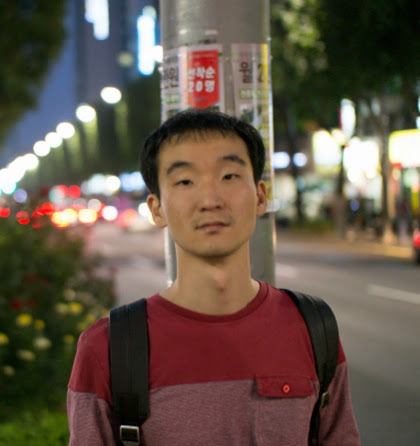

Compiler Engineer, FuriosaAI
📧 cho.sungkeun at gmail.com
I am interested in static program analysis, formal verification, and programming languages in general.
Jan. 2025 - Current, Compiler Engineer, FuriosaAI
Jun. 2019 - Jan. 2025, Software Engineer, Meta (formerly Facebook) @ London
Apr. 2017 - Mar. 2019, Contractor in the Infer team, Facebook @ Seoul
Sep. 2009 - Feb. 2018, PhD, Programming Research Laboratory, Department of Computer Science and Engineering, Seoul National University (Advisor: Kwangkeun Yi)
Apr. 2002 - Mar. 2006, B.S., Programming Logic Group, College of Information Science, University of Tsukuba (Advisor: Yukiyoshi Kameyama)
Crellvm: Verified Credible Compilation for LLVM. Jeehoon Kang*, Yoonseung Kim*, Youngju Song*, Juneyoung Lee, Sanghoon Park, Mark Dongyeon Shin, Yonghyun Kim, Sungkeun Cho, Joonwon Choi, Chung-Kil Hur**, and Kwangkeun Yi. PLDI'18. [pdf]
* The first three authors contributed equally and are listed alphabetically.
** Hur is the corresponding author.
See more details.
[Poster] ZooBerry: Automatic Generation of Sparse Global Static Analyzers & Their Validators. Sungkeun Cho and Kwangkeun Yi. PLDI'16 Student Research Competition. [pdf]
[Poster] Towards Scalable Verified Validation of Static Analyzers. Jeehoon Kang, Sungkeun Cho, Joonwon Choi, and Chung-Kil Hur. APLAS'14. [pdf]
[Poster] Extensible Verified Validation for LLVM Optimizations. Sungkeun Cho, Joonwon Choi, Jeehoon Kang, Chung-Kil Hur, and Kwangkeun Yi. APLAS'14.
GMeta: A Generic Formal Metatheory Framework for First-Order Representations. Gyesik Lee, Bruno C. d. S. Oliveira, Sungkeun Cho, and Kwangkeun Yi. ESOP'12. [pdf]
Last updated on 16 Aug 2025